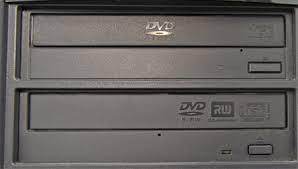

CD Drive Ports
CD drive ports refer to the physical interfaces used to connect optical drives, such as CD-ROM, DVD-ROM, and Blu-ray drives, to a computer system. These ports facilitate data transfer between the optical drive and the computer, enabling users to read and write data to optical discs.
What are CD Drive Ports?
CD drive ports are the connectors on the computer that allow optical drives to communicate with the system and transfer data. They provide the necessary electrical and data connections for the optical drive to function correctly and access the data stored on CDs, DVDs, or Blu-ray discs.

Common CD Drive Port Types
The most common types of CD drive ports include:
- PATA (Parallel ATA): PATA, also known as IDE (Integrated Drive Electronics), was the primary interface used for connecting optical drives and hard drives in older computer systems. It uses a wide, flat ribbon cable to connect the drive to the motherboard.
- SATA (Serial ATA): SATA is a newer interface that replaced PATA in modern computers. It uses a more compact and efficient cable design to connect optical drives and other storage devices to the motherboard.
- USB: Some external optical drives connect to a computer using a USB (Universal Serial Bus) port. These drives do not require a dedicated internal connector and can be easily connected to various computer systems.
Connecting Optical Drives
To connect an optical drive to a computer, follow these general steps:
- Locate the appropriate port on the motherboard or expansion card (PATA, SATA, or USB).
- Align the connector on the optical drive's cable with the port on the computer.
- Gently insert the cable into the port, ensuring a secure connection.
- For internal drives, secure the drive in the appropriate bay or mounting location within the computer case.
- Connect any additional power cables required by the optical drive.
- Install the necessary drivers or software to enable communication between the computer and the optical drive.
Importance of CD Drive Ports
CD drive ports play a crucial role in enabling the use of optical discs for data storage, backup, and software installation. While optical media has largely been replaced by more modern storage technologies like USB drives, cloud storage, and solid-state drives (SSDs), CD drive ports are still relevant for legacy systems, data recovery, and specialized applications.
Understanding the different types of CD drive ports and their connection methods is essential for correctly installing and configuring optical drives in a computer system, ensuring seamless data access and compatibility.